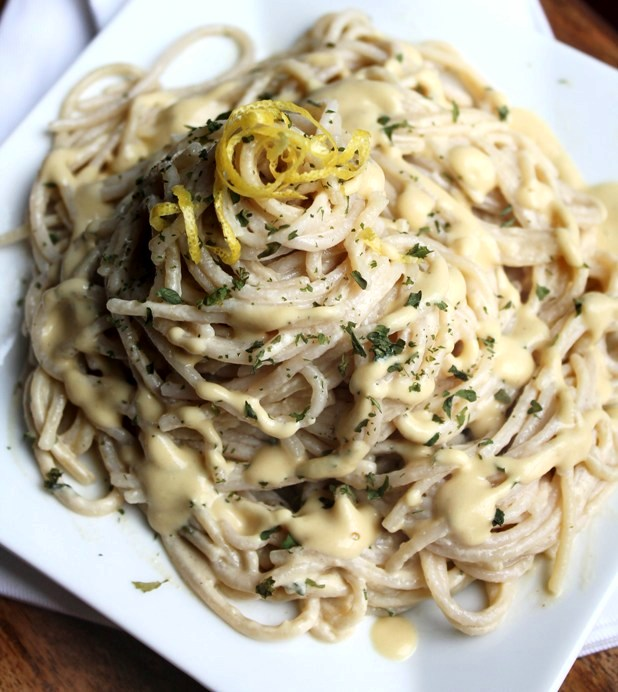

Vegan Alfredo

Easy to make cashew cream based Alfredo
Ingredients
- 1 Cup - Raw Cashews
- 1-3 Tbsp - Nutrtional Yeast
- 1 Tbsp - Vegatable Bette than Bouillion
- 3 - Garlic cloves
- 2-4 Tbsp - Apple Cider Vinegar
- 1 Cup - Water
- Any Seasoning of choice, i.e., Italian, Pepper, etc
Optional: Various veggies like onions,carrots, and brocolli can be added.
Onions are best sauteed in the pan you'll be simmering the sauce in.
Steps
- Bring to a boil and simmer cashews in water for 20 minutes
- Drain and rinse Cashews and place in blender with remaining Ingredients, mix till smooth
- If you have any veggies, sautee/steam before adding sauce
- Simmer sauce until desired thickness, season to taste